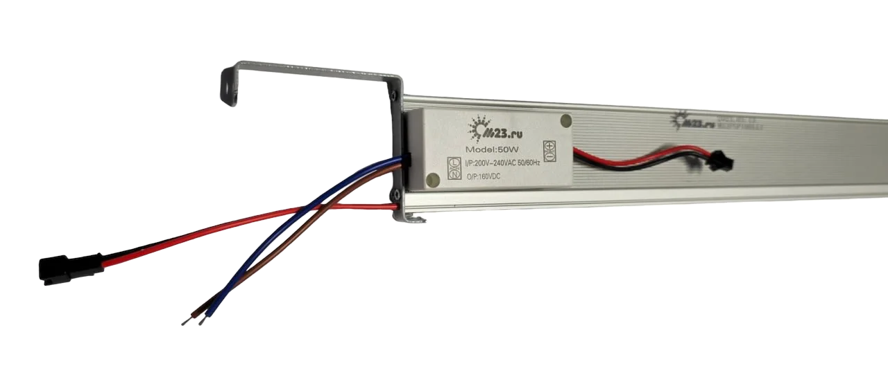
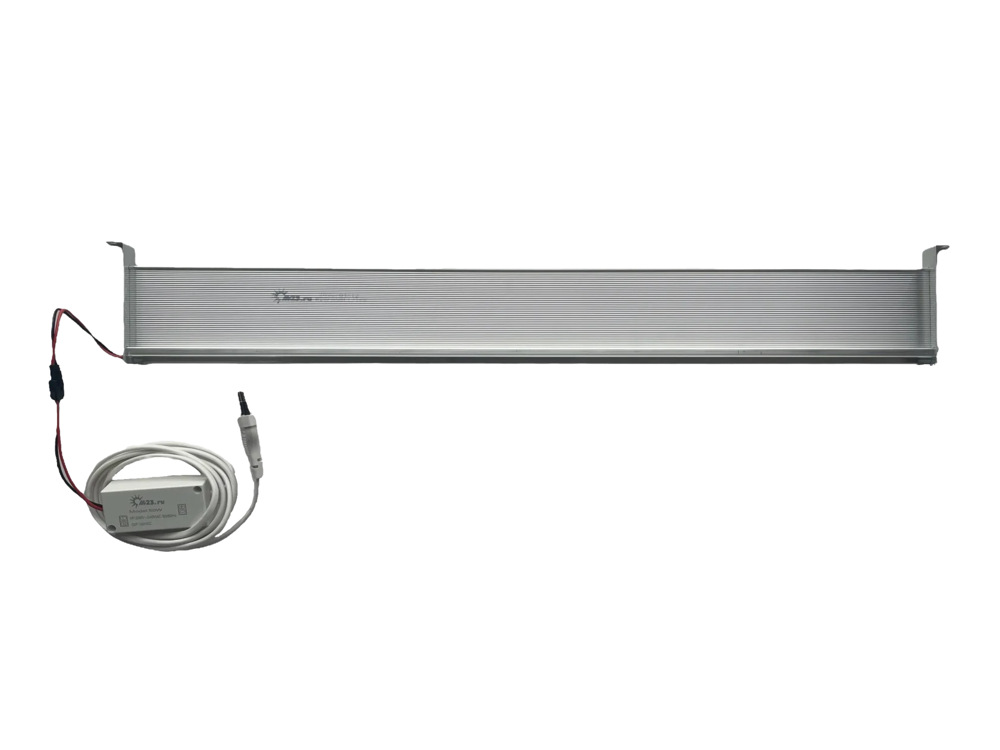
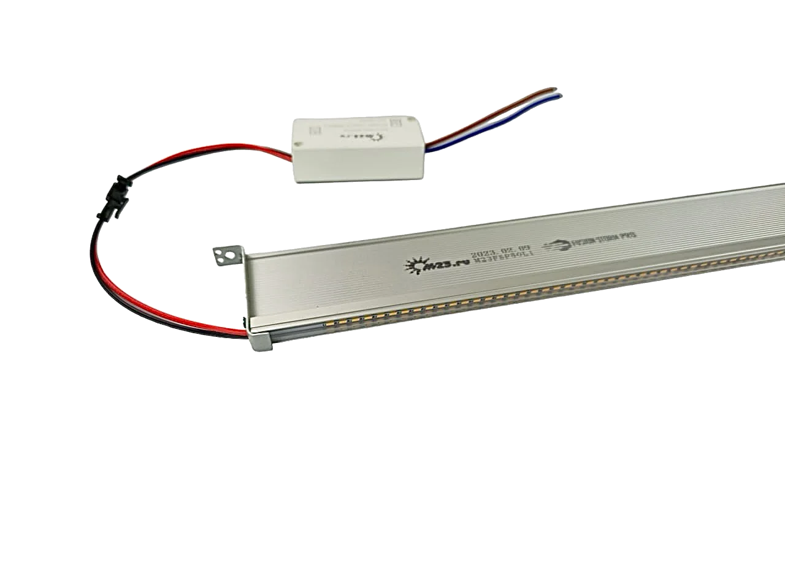

1. Для чего
Когда сюда вообще стоит идти
Свет даёт управляемый режим роста и плодоношения. Для клубники в контролируемой среде это часть всей технологической схемы фермы, а не отдельная покупка по мощности.
Это свет для многоярусных установок стеллажного типа, где клубника выращивается в помещении без солнечного света. Важны не абстрактные “ватты”, а длина светильника, режим 50/100 Вт, спектр, ярусность и совместимость со стеллажом.

Свет даёт управляемый режим роста и плодоношения. Для клубники в контролируемой среде это часть всей технологической схемы фермы, а не отдельная покупка по мощности.
Тип яруса, длину светильника, расстояние до листа, плотность посадки, сценарий выращивания и текущую схему электрики.
Если нужен типовой светильник на понятную задачу. Если строится новая схема, большая площадь или меняется конфигурация стеллажа, лучше идти через подбор и расчёт.




Подходит, когда задача понятна и нужно проверить длину, режим мощности и совместимость со стеллажом перед покупкой.
Если ферма новая, площадь большая или вы не уверены в конфигурации, начинать лучше с подбора, а не с корзины.
Ниже типовые позиции для понятной задачи и более мощные тепличные светильники, которые лучше не покупать без проверки общей схемы света.

Короткий светильник M23 для компактного пролёта и типовой ячейки, когда схема по длине уже понятна.

M23 под пролёт около метра. Типовая позиция, но перед покупкой всё равно нужно сверить длину и логику подвеса.
Длинный M23 с двумя режимами мощности 50/100 Вт для многоярусных линий и понятной схемы электрики.

Тепличная промышленная позиция. Её лучше смотреть уже в логике зоны досветки, а не как обычный SKU для корзины.

Мощный тепличный светильник для крупных задач и высокой плотности досветки. Здесь уже нужен контроль общей световой схемы.
Если вы одновременно пересобираете стеллаж, полив и свет, решение лучше считать целиком. Ошибка здесь обычно тянет за собой всю технологию.
Оставьте задачу, и вам скажут, что можно брать сразу, а что лучше считать под объект.